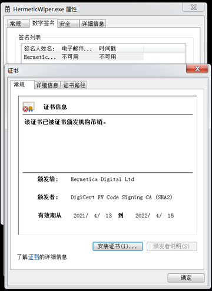

HermeticWiper病毒分析
俄乌网络战中出现的四种数据擦除器：
| 发现时间 | |
|---|---|
| WhisperGate | 2022年1月13日 |
| HermeticWiper | 2022年2月24日 |
| IsaacWiper | 2022年2月24日 |
| CaddyWiper | 2022年3月14日 |
样本信息
2022年2月24日，俄乌冲突逐渐升级。一款名为“ HermeticWiper”（又名KillDisk.NCV）的新型数据擦除恶意软件在乌克兰的数百台重要的计算机上被发现，涉及乌克兰的金融和政府承包商，导致相关组织的系统设备数据遭到摧毁，其中一次入侵涉及直接从Windows域控制器部署恶意软件。此次攻击还包括HermeticWizard（横向移动）、HermeticRansom（加密勒索）两个组件，但是样本质量不高，影响不大，真正构成威胁的仍是“HermeticWiper”。对于“HermeticWiper”恶意软件，详情如下：
| 文件名 | HermeticWiper.exe |
|---|---|
| MD5 | 3F4A16B29F2F0532B7CE3E7656799125 |
| SHA1 | 61B25D11392172E587D8DA3045812A66C3385451 |
| CRC32 | 4D4E5EAD |
| 文件大小 | 117,000 字节 |
| 数字签名 | Hermetica Digital Ltd |
| 病毒类型 | Trojan.Win32.HermeticWiper.a |
样本分析
样本基本信息
样本使用了由“Hermetica Digital Ltd”进行的数字签名(证书目前已被吊销)，通过这种方式来逃避基于WindowsAPI的检测。
获取样本基本信息，可以发现程序未加壳，版本信息为VC++7.10，由Visual Studio 2017编译，2022年2月23日编译成功。


样本包含了四个资源。通过SZDD头部信息可知均为微软自带的压缩格式，使用了微软的压缩命令工具“compress.exe”进行了压缩。使用expand命令解压后，通过文件签名和hash比对，发现这些驱动程序是商用数据恢复和磁盘管理软件“EaseUS Partition Master”的多个系统版本，包括x86和x64架构。


动态运行分析
虚拟机及沙箱运行样本后发现，样本会释放驱动程序，并进行安装，修改注册表，并大量枚举文件和目录，访问硬盘引导扇区，导致系统重启后显示“Missing operating system”。


初步怀疑该样本通过利用驱动程序与存储设备进行交互，获取底层磁盘访问及检索分区信息的能力，进而修改硬盘存储的主引导记录、文件等信息，达到恶意擦除、摧毁数据的目的。
静态分析
首先样本会进行提权操作，为下一步枚举文件及目录做准备。

禁用卷影拷贝服务(vss)来禁用故障转储，破坏系统的备份。

判断操作系统的版本和系统位数，根据结果加载四个资源文件中的其中一个资源文件。

将注册表HKLM\System\CurrentControlSet\Control\CrashControl\CrashDumpEnabled键值设置为0，并获取所有物理磁盘的编号。

将解压出的资源文件释放至*C:\Windows\System32\drivers*目录下并安装。安装成功后，与服务相关的注册表项以及删除的文件都将被删除，以使新驱动程序更难被发现。


最后进行数据删除。枚举0-100一系列物理驱动器，对于每个物理驱动器，.\PhysicalDrive%u都会调用设备以获取设备编号，并删除从0-100序号的所有物理驱动器中的C:\SystemVolume Information文件夹，防止系统通过还原点及备份恢复数据。

对NTFS和FAT驱动器类型分别进行数据擦除处理。

擦除C:/Documents and settings文件夹中的内容，并销毁系统日志。

IOCs
MD5：
3F4A16B29F2F0532B7CE3E7656799125
6106653B08F4F72EEAA7F099E7C408A4
093CEE3B45F0954DCE6CB891F6A920F7
BDF30ADB4E19AFF249E7DA26B7F33EAD
D57F1811D8258D8D277CD9F53657EEF9
总结
HermeticWiper 病毒利用合法驱动程序的数字签名，绕过某些Windows安全机制，同时利用驱动程序与存储设备进行交互，获取底层磁盘访问及检索分区信息的能力，进而对磁盘上的 MBR 和分区进行覆盖，使得数据几乎不可能恢复。并且该病毒对于隐匿痕迹以及阻止系统恢复的模块很有参考价值，增加了取证分析人员的工作难度。
参考
本博客所有文章除特别声明外，均采用 CC BY-SA 4.0 协议 ，转载请注明出处！